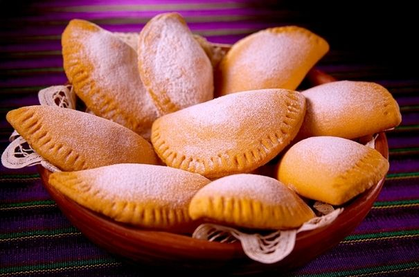

Empanadas de leche
un postre delicioso y reconfortante de la cocina guatemalteca: las empanadas de leche. Estas empanadas son pequeñas delicias rellenas de una mezcla dulce de leche condensada, canela y esencia de vainilla, y luego horneadas hasta que estén doradas y crujientes.
Nuestras empanadas de leche son perfectas para disfrutar como postre después de una comida o como un sabroso bocadillo en cualquier momento del día. Su dulzura suave y su textura crujiente las hacen irresistibles para cualquier amante de los postres.
¡No pierdas la oportunidad de probar estas deliciosas empanadas de leche y deleitar tu paladar con el auténtico sabor de la cocina guatemalteca!
Esta dispoible por tan solo Q10.00
